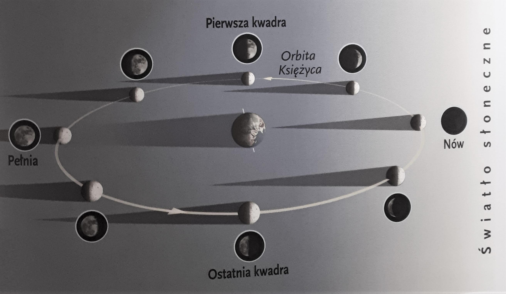
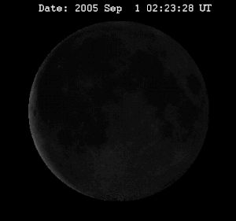
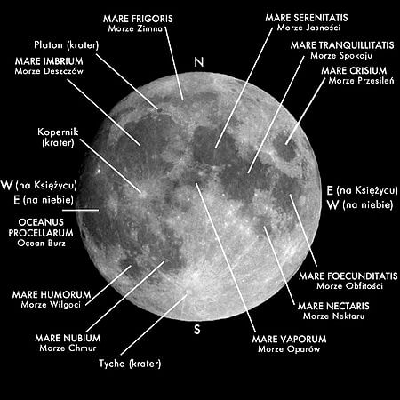

Księżyc - naturalny satelita Ziemi
Spis treści:
- Wstęp oraz informacje ogólne
- Misja kosmiczna Apollo 11
- Fazy Księżyca
- Powierzchnia Księżyca
- Ciekawostki
Księżyc jest jedynym naturalnym satelitą Ziemi. Ma masę o ponad 81 razy i średnicę o ponad 3,5 raza mnięjszą od niej. Obrót Księżyca wokół własnej osi, trwa tyle samo co obrót wokół Ziemi, przez co widzimy cały czas tylko jedną jego stronę.
| Średnica: | 3467 km, 27% średnicy Ziemi |
|---|---|
| Masa: | 7,347 673×1022 kg, ok. 1,2% masy Ziemi |
| Odległość od Ziemi: | 384 400 km |
| Okres obrotu wokół Ziemi: | 27,3 dnia |
| Okres obrotu wokół własnej osi: | 27,3 dnia |
Apollo 11
Najprawdopodobniej najbardziej znana misja szerokiego programu Apollo. Była to pierwsza załogowa misja kosmiczna, której celem było lądowanie człowieka na Księżycu.
Misja rozpoczęła się 16 lipca 1969 roku z przylądka Canaveral na Florydzie. Apollo 11 udał się w kierunku Księżyca po uprzednim krótkim pobycie na orbicie okołoziemskiej. Statek wszedł na orbitę okołoksiężycową po trzech dniach lotu. Wtedy odłączył się moduł księżycowy, w którym znajdowali się Armstrong i Aldrin. 20 lipca kiedy moduł księżycowy wylądował na Morzu Spokoju dowódca Apollo 11 przekazał komunikat, na który z zapartym tchem oczekiwał cały świat: „Orzeł wylądował”. To nie jedyne słynne słowa wypowiedziane podczas tej misji. Po zejściu z drabinki i postawieniu pierwszy raz stopy na ziemskim satelicie Neil Armstrong wypowiedział zdanie, które już na zawsze wpisało się do historii ludzkości:
Dla człowieka to jeden mały krok, dla ludzkości skok ogromny.
- Dowódca – Neil Armstrong
- Pilot modułu dowodzenia – Michael Collins
- Pilot modułu księżycowego – Edwin Aldrin
Rakieta wraz z modułem załogowym miała 111 metrów wysokości, a całkowita masa startowa wynosiła prawie 3000 ton.
Fazy Księżyca
 - Nów - Księżyc w nowiu jest uznany za pierwszą fazę, w czasie której jest niewidoczny. Faza ta występuje w momencie, gdy Słońce oraz Księżyc leżą w jednej linii. Naturalny satelita znajduje się wówczas pomiędzy Ziemią a Słońcem.
- Pierwsza kwadra - Faza druga, w czasie której Księżyc znajduje się na 1/4 swej orbity. Wówczas widoczne jest z Ziemi 50% jego powierzchni.
- Pełnia - Faza ta ma miejsce, gdy Słońce oraz Księżyc są na równej linii, a Ziemia jest pomiędzy nimi. Widoczna jest wtedy cała tarcza Księżyca.
Kiedy cień Ziemi zasłoni promienie słoneczne powodujące pełnię, powstaje zaćmienie Księżyca. - Ostatnia kwadra - Trzecia kwadra to moment, w którym oświetlana jest druga połowa Księżyca.
Powierzchnia Księżyca
Na Księżycu nie ma atmosfery, nic więc nie utrudnia obserwacji jego powierzchni. Gołym okiem jesteśmy w stanie rozpoznawać typowe formacje księżycowe o rozmiarach powyżej 120 kilometrów. Teleskop czy nawet lornetka pozwalają na dostrzeżenie na powierzchni Księżyca o wiele więcej szczegółów: do 1 kilometra wielkości.
Nieuzbrojonym okiem wyróżniamy na powierzchni Księżyca jaśniejsze i ciemniejsze rejony, w tym pojedyncze jasne plamy. Gdy Księżyc "rośnie", w jego północno-wschodnim kwadrancie można rozpoznać ciemny, eliptyczny kształt Mare Crisium. Ten i podobne jednolicie ciemne obszary nazywamy, zgodnie z tradycją historyczną, mare (liczba mnoga: maria, wymawiane z akcentem na pierwszej sylabie), gdyż w czasach, gdy jeszcze sądzono, że na Księżycu jest woda, były one brane za morza.
W rzeczywistości są to duże ciemne równiny pokryte zastygłym bazaltem. Powstały one na skutek rozległych wylewów lawy, których większość nastąpiła pomiędzy 3,8 a 3,1 mld lat temu.
Morza zajmują 16% powierzchni Księżyca, a najwięcej ich znajduje się po jego widocznej stronie.
Natomiast jaśniejsze obszary księżycowej powierzchni to usiane kraterami formacje górskie, lepiej odbijające światło słoneczne.
Kratery to zagłębienia na powierzchni planety o charakterystycznym kolistym kształcie. Kratery uderzeniowe powstają w wyniku uderzenia ciała niebieskiego (najczęściej meteorytu, ale również planetoidy i komety) w powierzchnie.
Źródła grafiki:
NASA, wikipedia.org
Źródła informacji:
„Kosmos – niezbędnik młodego odkrywcy” Wydawnictwo JEDNOŚĆ, „Kosmos – tajemnice Wszechświata. Encyklopedia astronomii astronautyki” Wydawca Oxford Educational Sp.z.o.o., www.urania.edu.pl, senpolifazowy.pl, pl.wikibooks.org, www.naukowiec.org, pl.wikipedia.org